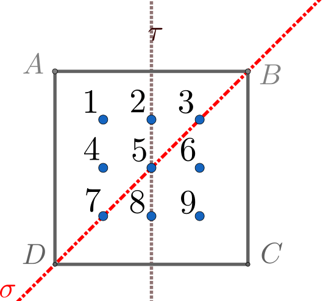

This example illustrates how RepLAB could be employed to numerically solve eigenvalue problems, when the operator involved in the problem is subject to symmetries. To be specific, in this document we will show that RepLAB can be used as a complement to standard numerical analysis approaches in solving the Laplace’s equation to the point that an approximate solution can be obtained just by making use of the process of symmetrization explained below.
For this tutorial we assume some prior familiarity with RepLAB up to an extent that the user understands how to construct different groups and representations with RepLAB; otherwise see this tutorial first. Furthermore, we would suggest that, if the user is not familiar with concepts from Representation Theory such as Schur’s lemma and its applications in block diagonalization, to follow this tutorial along with the second chapter of this textbook or any other similar textbook of personal tase that covers the same topic.
As always, before using RepLAB commands, initialize the library:
[1]:
run ../../../replab_init
Adding RepLAB to the path
Loading optim package for Octave...
OpenJDK 64-Bit Server VM warning: Archived non-system classes are disabled because the java.system.class.loader property is specified (value = "org.octave.OctClassLoader"). To use archived non-system classes, this property must be not be set
Loading symbolic package for Octave...
Adding VPI to the path
Adding MOxUnit to the path
Adding embedded YALMIP to the path
Adding embedded SDPT3 solver to the path
Adding MOcov to the path
Let a membrane be stretched over a square region and clamped along the boundary. We know, then, that the displacement \(u(x,y)\) in the perpendicular plane of the paper satisfies the differential equation \(\Delta u +\lambda u = 0\) along with the boundary conditions \(u=0\), where \(\Delta\) is the Laplacian operator \(\Delta = \frac{\partial^2}{\partial x^2} + \frac{\partial^2}{\partial y^2}\) and \(\sqrt{\lambda}\) is the frequency of the oscillation.
What we want to accomplish is to numerically solve the above partial differential equation and to this end, we will combine a standard numerical method of solving Laplace’s equation, along with a complement numerical study by RepLAB. At first, we need to define the lattice points inside the square region and for this we follow the next steps:
Discretization: Consider a lattice made up of \(n = k^2\) points arranged in the square, and number them from the upper left to the bottom right vertex. In our case, the lattice points should look like this:
[2]:
LatticePoints = [1 2 3; 4 5 6; 7 8 9]
LatticePoints =
1 2 3
4 5 6
7 8 9
Approximate \(u(x,y)\) by the lattice function \(\upsilon\) at the nine points of the square and the negative Laplacian operator \(\Delta\) by a cross operator acting on 5 points. The key insight here is that the partial derivatives at the grid point \((i,j)\) can be evaluated using the discrete values of the lattice funtion at \((i,j)\) itself (with weight 4) and those at its 4 neighbouring points (with weight -1). Therefore, the relevant grid points form a “cross” pattern, which we call the “cross operator”.
This defines a discretized 9-dimensional eigenvalue problem:
\begin{align*} M\upsilon = \lambda \upsilon \end{align*}
where the \(i\)-th equation is obtained by translating the cross operator into the point number \(i\). Hence, for example, the first and the fifth equations read:
\begin{align*} 4\upsilon_1 - \upsilon_2 - \upsilon_4 = \lambda\upsilon_1 \\ 4\upsilon_5 - \upsilon_2 -\upsilon_4 - \upsilon_6 - \upsilon_8 = \lambda\upsilon_5 \end{align*}
where \(\upsilon_i\) is the lattice function at the \(i\)-th lattice point.
By doing so, and by writing explicitly down the rest of the equations we obtain a \(n \times n\) matrix for \(M\):
[3]:
M=[4 -1 0 -1 0 0 0 0 0; -1 4 -1 0 -1 0 0 0 0; 0 -1 4 0 0 -1 0 0 0;
-1 0 0 4 -1 0 -1 0 0; 0 -1 0 -1 4 -1 0 -1 0; 0 0 -1 0 -1 4 0 0 -1;
0 0 0 -1 0 0 4 -1 0;0 0 0 0 -1 0 -1 4 -1 ; 0 0 0 0 0 -1 0 -1 4] ;
Now, even though this matrix can be easily diagonalized to get the eigenfrequencies of the membrane oscillations, the eigenspaces computed in this basis do not offer much understanding into the eigenstates of our problem.
In the rest of this document we will investigate a group theoretical method by means of RepLAB that can lead to the eigendecomposition of this matrix only by utilizing the symmetries of the problem. As it turns out, RepLAB naturally provides the change-of-basis matrix that put the above matrix into a block diagonal form by a linear change of coordinates. The outcomes of this method are: * Further simplification of the determination of the eigenvalues * Draw more insight from the oscillation states and the eigenspaces of our problem expressed in the new basis.
Up to this point, we have only made use of the well-known method of finite differences in constructing an eigenvalue problem for our \(\Delta\)-operator. In the following, instead of employing an iterative method to find solutions for the lattice function (as is often the case with other numerical studies), we will demonstrate how we can exploit the symmetries of our operator along with RepLAB to simplify the eigenvalue problem.
At first, notice that the discretized cross operator has the symmetry of the dihedral group \(D_4\), which is the group of the symmetries of the square; that is to say all the rotations and reflections that map the square to itself. This should be evident, if one takes into account the general form of this cross operator.
Let the two generators of \(D_4\) be the two reflections:
About the diagonal red line, which will be denoted by \(\sigma\), and
About a vertical grey line \(\tau\) joining the midpoints of two opposite sides.

Thereby, we can construct a representation of dimension \(d=9\) of \(D_4\) by regarding the 9 objects to be permuted as the lattice points inside the square region, while we transform the square under the action of \(D_4\).
We can ask RepLAB to construct the dihedral group as a subgroup of \(S_9\); all we have to do is to provide the generators of the subgroup that we wish to generate. Moreover, the reason why we are using the symmetric group \(S_9\) in this example is because we are permuting 9 distinct elements. In RepLAB this construction can be achieved with the simple command:
[4]:
S9 = replab.S(9);
The generators of the dihedral group can be found be looking at the results of the reflections on the lattice points of the square. Take, for instance, the reflection about the vertical axis defined above. This transformation will map the lattice points of the 2nd column to themselves, while it will interchange the 1st and the 3rd column, leading to a new setting of points. A generator is attributed to this transformation by converting this new setting of lattice points into an array of numbers. As a matter of fact, the new point settings can be realized as the images of the initial lattice under the applied transformations.
We denote by \(g_1\),\(g_2\) the generators associated with the reflections about the diagonal and the vertical axis respectively:
[5]:
g1 = [9 6 3 8 5 2 7 4 1];
g2 = [3 2 1 6 5 4 9 8 7];
At this point, we initiate the subgroup as follows:
[6]:
DH = S9.subgroup({g1 g2})
DH =
Permutation group acting on 9 elements of order 8
domainSize: 9
identity: [1, 2, 3, 4, 5, 6, 7, 8, 9]
type: Symmetric group acting on 9 elements
generator(1): [9, 6, 3, 8, 5, 2, 7, 4, 1]
generator(2): [3, 2, 1, 6, 5, 4, 9, 8, 7]
recognize: AtlasResult (Dihedral group of order 8)
This way we have created an instance of the dihedral group \(D_4\) by associating to every single symmetry of the square a permutation of the 9 lattice points.
We know proceed further and construct the natural representation of the dihedral group with the help of the method naturalRep of the class replab.PermutationGroup, which provides a representation of a permutation group through permutation matrices.
[7]:
natRep = DH.naturalRep;
and ask RepLAB to decompose this representation into its irreducible components:
[8]:
natDec = natRep.decomposition.nice;
Notice that we made use of nice here to ask RepLAB to return a nicer basis with small integer coefficients.
[9]:
natDec.nComponents
ans = 4
This shows that the natural representation of the dihedral group has 4 irreducible components.
If we let \(\vartheta_{nat}\) be the natural representation of the group \(D_4\) acting on the lattice points, then we showed by the decomposition method that we can express \(\vartheta_{nat}\) as the direct some of more fundamental representations as: \begin{align*} \vartheta_{nat} = c_1 \vartheta_1 \oplus c_2 \vartheta_2 \oplus \dots \oplus c_N \vartheta_N \end{align*}
where \(\vartheta_j\) are irreducible and mutually inequivalent representations of \(G\). while we indicate by \(c_j\) the multiplicity and by \(n_j\) the dimensions of \(\vartheta_j\). Consequently, the representation space \(V\) of \(\vartheta_{nat}\) decomposes into \begin{align*} V = V_1 \oplus V_2 \oplus \dots \oplus V_N \end{align*}
Here \(V_j\) consists of \(c_j\) invariant subspaces \(V^1_j, V^2_j, \dots V^{c_j}_j\), each of which has dimension \(n_j\) and transforms under the irreducible representation \(\vartheta_j\). We call the \((c_j n_j)\)-dimensional subspaces \(V_j\) of \(V\) the isotypic components of type \(\vartheta_j\) for \(\vartheta_{nat}\).
To find the dimensions and the multiplicities of the irreps \(\vartheta_j\) in RepLAB is an easy task; simply use the .irrepDimension and .multiplicity methods from the replab.Isotypic class. For instance,for the 4th isotypic component we get:
[10]:
Iso4 = natDec.component(4);
Iso4.irrepDimension
Iso4.multiplicity
ans = 2
ans = 2
From that we conclude that the decomposed natural representation, when expressed as a direct sum, will have two copies of a 2-dimensional irreducible representation.
As a result, if we continue in the same manner, we can construct the following table, where we present the isotypic components \(V_j\) of the 9-dimensional representation along with the multiplicities \(c_j\) and the dimensions \(n_j\) of the corresponding irreducible subspaces \(V^i_j\)
Multiplicity \(c_j\) |
Dimension \(n_j\) |
|
|---|---|---|
1st isotypic component |
3 |
1 |
2nd isotypic component |
1 |
1 |
3rd isotypic component |
1 |
1 |
4th isotypic component |
2 |
2 |
Let’s now see how we can interpret the decomposition of \(\vartheta_{nat}\) that RepLAB returns in light of the above discussion:
[11]:
natDec
natDec =
Real representation
dimension: 9
field: 'R'
frobeniusSchurIndicator: []
group: Permutation group acting on 9 elements of order 8
isDivisionAlgebraCanonical: []
isIrreducible: []
isUnitary: []
parent: Orthogonal representation by images
trivialDimension: []
basis.(:,1): [-0, -0, -0, -0, 1, -0, -0, -0, -0].'
basis.(:,2): [1, 0, 1, 0, -0, 0, 1, 0, 1].'
basis.(:,3): [0, 1, 0, 1, 0, 1, 0, 1, 0].'
basis.(:,4): [1, 0, -1, 0, 0, 0, -1, 0, 1].'
basis.(:,5): [0, -1, 0, 1, 0, 1, 0, -1, 0].'
basis.(:,6): 9 x 1 double
basis.(:,7): 9 x 1 double
basis.(:,8): 9 x 1 double
basis.(:,9): 9 x 1 double
component(1): Isotypic component (harmonized) I(3)xR(1) (trivial)
component(2): Isotypic component ?(1)
component(3): Isotypic component ?(1)
component(4): Isotypic component (harmonized) I(2)xR(2)
Clearly, the first isotypic component contains three copies of the trivial representation denoted by \(R(1)\) in the above; this is encoded in the Kronecker product form \(\mathbb{I}_3 \otimes R(1)\). The same applies to the 4th component, where we can deduce that it is constituted by two copies of a real, 2-dimensional, representation \(R(2)\) and has the form \(\mathbb{I_2} \otimes R(2)\). Evidently, these structures are block-diagonal, as can directly be verified.
The unique feature of RepLAB is that it provides the change of basis matrix that makes the block-diagonal form of the images apparent. In RepLAB, this can be realized by asking for the basis of the decompositition:
[12]:
basis = natDec.basis;
To make this even more clear, we now ask RepLAB for the images of the generators in the natural representation and then we transform them under a similarity transformation induced by the basis matrix:
[13]:
image1 = natRep.image(g1); image2 = natRep.image(g2);
inv(basis)*image1*basis
inv(basis)*image2*basis
ans =
Columns 1 through 8:
1.00000 0.00000 -0.00000 -0.00000 0.00000 0.00000 0.00000 -0.00000
0.00000 1.00000 0.00000 0.00000 -0.00000 0.00000 0.00000 0.00000
0.00000 0.00000 1.00000 0.00000 0.00000 0.00000 -0.00000 -0.00000
0.00000 0.00000 -0.00000 1.00000 0.00000 0.00000 0.00000 0.00000
0.00000 0.00000 0.00000 0.00000 -1.00000 0.00000 -0.00000 -0.00000
0.00000 0.00000 0.00000 -0.00000 0.00000 0.04406 -0.99903 -0.00000
0.00000 0.00000 0.00000 0.00000 -0.00000 -0.99903 -0.04406 0.00000
0.00000 -0.00000 0.00000 0.00000 0.00000 0.00000 0.00000 0.04406
0.00000 0.00000 0.00000 0.00000 -0.00000 -0.00000 -0.00000 -0.99903
Column 9:
-0.00000
0.00000
-0.00000
0.00000
0.00000
-0.00000
0.00000
-0.99903
-0.04406
ans =
Columns 1 through 8:
1.00000 0.00000 0.00000 0.00000 0.00000 0.00000 0.00000 -0.00000
0.00000 1.00000 -0.00000 0.00000 0.00000 -0.00000 -0.00000 0.00000
0.00000 0.00000 1.00000 0.00000 -0.00000 -0.00000 -0.00000 -0.00000
0.00000 0.00000 0.00000 -1.00000 0.00000 0.00000 -0.00000 0.00000
0.00000 0.00000 0.00000 0.00000 1.00000 -0.00000 0.00000 0.00000
0.00000 0.00000 0.00000 0.00000 -0.00000 -0.99903 -0.04406 0.00000
0.00000 0.00000 0.00000 0.00000 0.00000 -0.04406 0.99903 -0.00000
0.00000 -0.00000 0.00000 -0.00000 -0.00000 0.00000 -0.00000 -0.99903
0.00000 0.00000 0.00000 0.00000 0.00000 0.00000 0.00000 -0.04406
Column 9:
-0.00000
0.00000
-0.00000
-0.00000
0.00000
0.00000
0.00000
-0.04406
0.99903
As expected, this verifies that the images have a block diagonal structure. In what follows, we are considering as our basis the vectors of the column space of the basis matrix, which RepLAB returns after the decomposition. This choice of basis vectors is ideal for the purposes of the block symmetrization, since it manifests the block-diagonal nature of the images.